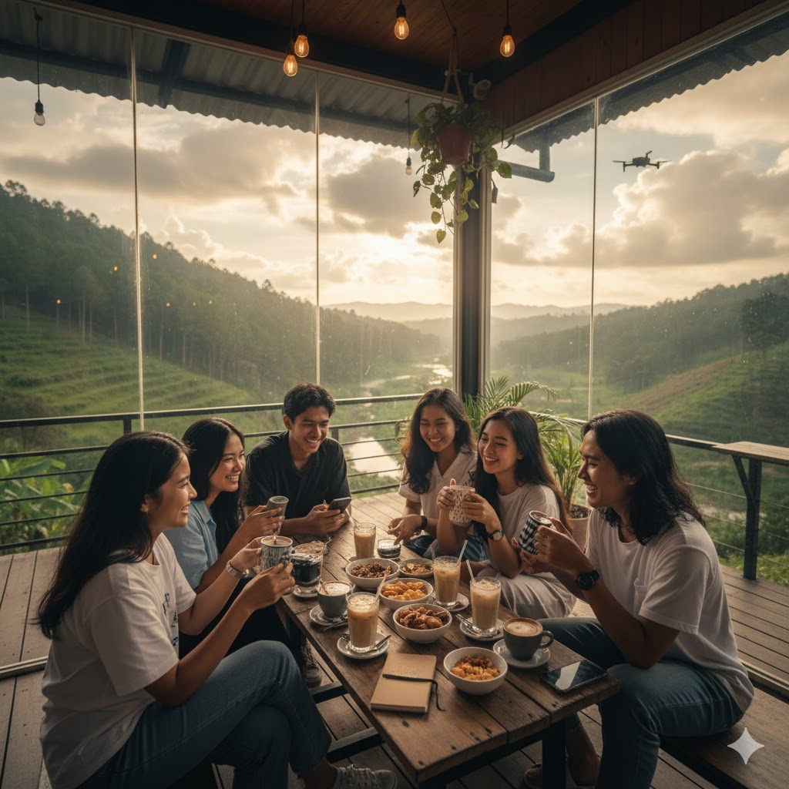

Kategori: Hidden Gem | [cite_start]Durasi: 1D (weekend) [cite: 221]
[cite_start]Cocok untuk mahasiswa yang suka cafe estetik & alam ringan. [cite: 221]
Daftar Sekarang! (WhatsApp)
[cite_start]
Itinerary Singkat [cite: 222]
[cite_start]- 07.00: Berangkat dari Malang kota [cite: 223]
[cite_start]- 08.30: Air Terjun Coban Rais (hidden spot) [cite: 224]
[cite_start]- 11.00: Piknik mini + makan siang di alam [cite: 225]
[cite_start]- 13.30: Ngopi di cafe hidden gem (Amstirdam / Rumah Opa vibes) [cite: 226]
[cite_start]- 16.00: Spot foto estetik (view gunung / ladang bunga) [cite: 227]
[cite_start]- 18.00: Pulang [cite: 228]
[cite_start]
Fasilitas Termasuk (All-In) [cite: 230]
- ✓ Transport lokal (Hiace/ELF sharing)
- ✓ Tiket wisata & parkir
- ✓ Makan siang & snack
- ✓ Tour Leader & Crew
- ✓ Souvenir & logistik
[cite_start]
🎁 Bonus Spesial [cite: 232]
- ✓ Sesi mini games & sharing time
- ✓ Dokumentasi profesional (foto + short video edit)